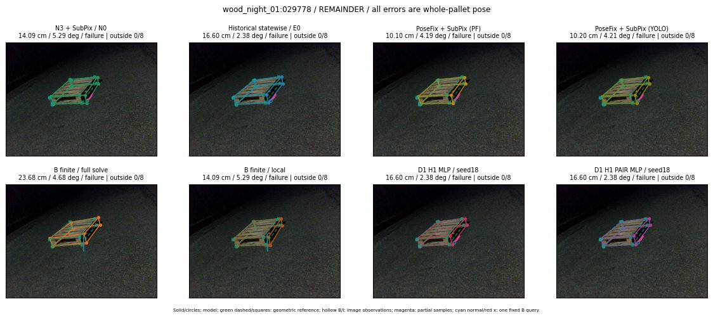

Whole-pallet pose errors; reference is a fixed geometric annotation, not certified physical GT.

Scores are uncalibrated logits. N0 retention is a numerical pose alias; it differs from H0 none or B fallback. B/I and profiles in baseline/B panels are original observations; L panels use new D1 observations. Only one deterministic supported B query is shown in a thumbnail; full support counts are below. Grey privacy rectangles edit the display copy only and are unrelated to O states; all observations were measured on original pixels. Thumbnails use JPEG quality85; detailed scientific panels are PNG.
| Method | Whole pose / cm, deg | Actual source | Selected ID | Score | Archived candidates | Eligible | N0 retained | H0 none | Fallback | Finite profiles |
|---|---|---|---|---|---|---|---|---|---|---|
| Raw YOLO + F | 10.99 cm / 5.85 deg / failure | OTHER | None | N/A | N/A | N/A | False | N/A | None | N/A |
| N3 + SubPix / N0 | 14.09 cm / 5.29 deg / failure | N0 | None | N/A | N/A | N/A | True | N/A | None | N/A |
| Historical statewise / E0 | 16.60 cm / 2.38 deg / failure | E0_REGENERATED | None | N/A | N/A | N/A | False | N/A | False | N/A |
| PoseFix raw | 9.63 cm / 4.68 deg / failure | OTHER | None | N/A | N/A | N/A | False | N/A | None | N/A |
| PoseFix + SubPix (PF) | 10.10 cm / 4.19 deg / failure | OTHER | None | N/A | N/A | N/A | False | N/A | False | historical support records 9; finite audit N/A |
| PoseFix + SubPix (YOLO) | 10.20 cm / 4.21 deg / failure | OTHER | None | N/A | N/A | N/A | False | N/A | False | historical support records 9; finite audit N/A |
| Historical L, seed18 | 14.09 cm / 5.29 deg / failure | N0 | N0 | N/A | 43 | 39 | True | True | True | N/A |
| Historical B fixed bank | 16.60 cm / 2.38 deg / failure | OTHER | LOGGED/G13/ORIGINAL_WD/outline_consider/21 | N/A | N/A | N/A | False | N/A | False | N/A |
| Historical B full | 23.68 cm / 4.68 deg / failure | OTHER | NEW/B/ORIGINAL_WD/h0/G13/ORIGINAL_WD/sample/0/PROPOSED_NATIVE_YAW_0 | N/A | N/A | N/A | False | N/A | False | N/A |
| Historical edge full | 91.56 cm / 17.75 deg / failure | OTHER | NEW/edge/ORIGINAL_WD/h0/G13/ORIGINAL_WD/sample/0/PROPOSED_NATIVE_YAW_0 | N/A | N/A | N/A | False | N/A | False | N/A |
| Historical AB full | 23.68 cm / 4.68 deg / failure | OTHER | NEW/AB/ORIGINAL_WD/h0/G13/ORIGINAL_WD/sample/0/PROPOSED_NATIVE_YAW_0 | N/A | N/A | N/A | False | N/A | False | N/A |
| B finite / fixed bank | 34.35 cm / 73.90 deg / failure | OTHER | G10/SWAPPED_WD/sample/1 | N/A | N/A | N/A | False | N/A | False | 28/28 |
| B finite / full solve | 23.68 cm / 4.68 deg / failure | OTHER | NEW_FINITE/B/ORIGINAL_WD/h0/G13/ORIGINAL_WD/sample/0/PROPOSED_NATIVE_YAW_0 | N/A | N/A | N/A | False | N/A | False | 28/28 |
| B finite / local | 14.09 cm / 5.29 deg / failure | N0 | N0 | N/A | N/A | N/A | True | N/A | True | N/A |
| Edge finite / full solve | 14.09 cm / 5.29 deg / failure | N0 | N0 | N/A | N/A | N/A | True | N/A | False | 28/28 |
| D0 H0 MLP / seed18 | 14.09 cm / 5.29 deg / failure | N0 | N0 | 2.2544610500335693 | 20 | 16 | True | True | True | N/A |
| D0 H0 MLP / seed19 | 14.09 cm / 5.29 deg / failure | N0 | N0 | 2.6029906272888184 | 20 | 16 | True | True | True | N/A |
| D0 H0 MLP / seed20 | 14.09 cm / 5.29 deg / failure | N0 | N0 | -0.37449198961257935 | 20 | 16 | True | True | True | N/A |
| D0 H1 MLP / seed18 | 16.60 cm / 2.38 deg / failure | OTHER | G13/ORIGINAL_WD/endpoint/21 | -1.9722522497177124 | 20 | 16 | False | False | False | N/A |
| D0 H1 MLP / seed19 | 16.60 cm / 2.38 deg / failure | OTHER | G13/ORIGINAL_WD/endpoint/21 | -2.3012032508850098 | 20 | 16 | False | False | False | N/A |
| D0 H1 MLP / seed20 | 16.60 cm / 2.38 deg / failure | OTHER | G13/ORIGINAL_WD/endpoint/21 | -3.4045028686523438 | 20 | 16 | False | False | False | N/A |
| D1 H0 MLP / seed18 | 14.09 cm / 5.29 deg / failure | N0 | N0 | 6.18113374710083 | 20 | 16 | True | True | True | N/A |
| D1 H0 MLP / seed19 | 14.09 cm / 5.29 deg / failure | N0 | N0 | 6.018730640411377 | 20 | 16 | True | True | True | N/A |
| D1 H0 MLP / seed20 | 14.09 cm / 5.29 deg / failure | N0 | N0 | 5.694629192352295 | 20 | 16 | True | True | True | N/A |
| D1 H1 MLP / seed18 | 16.60 cm / 2.38 deg / failure | OTHER | G13/ORIGINAL_WD/endpoint/21 | -0.687362790107727 | 20 | 16 | False | False | False | N/A |
| D1 H1 MLP / seed19 | 16.60 cm / 2.38 deg / failure | OTHER | G13/ORIGINAL_WD/endpoint/21 | -0.6775064468383789 | 20 | 16 | False | False | False | N/A |
| D1 H1 MLP / seed20 | 16.60 cm / 2.38 deg / failure | OTHER | G13/ORIGINAL_WD/endpoint/21 | -1.1804343461990356 | 20 | 16 | False | False | False | N/A |
| D1 H1 ROLE AFFINE / seed18 | 14.09 cm / 5.29 deg / failure | N0 | N0 | -0.3951297998428345 | 20 | 16 | True | False | False | N/A |
| D1 H1 ROLE AFFINE / seed19 | 14.09 cm / 5.29 deg / failure | N0 | N0 | -0.16870245337486267 | 20 | 16 | True | False | False | N/A |
| D1 H1 ROLE AFFINE / seed20 | 14.09 cm / 5.29 deg / failure | N0 | N0 | -0.40447768568992615 | 20 | 16 | True | False | False | N/A |
| D1 H1 PAIR MLP / seed18 | 16.60 cm / 2.38 deg / failure | E0_REGENERATED | E0_REGENERATED | -1.3005496263504028 | 20 | 2 | False | False | False | N/A |
| D1 H1 PAIR MLP / seed19 | 14.09 cm / 5.29 deg / failure | N0 | N0 | -1.3995068073272705 | 20 | 2 | True | False | False | N/A |
| D1 H1 PAIR MLP / seed20 | 16.60 cm / 2.38 deg / failure | E0_REGENERATED | E0_REGENERATED | -1.5620229244232178 | 20 | 2 | False | False | False | N/A |
| D1 H1 PAIR ROLE AFFINE / seed18 | 16.60 cm / 2.38 deg / failure | E0_REGENERATED | E0_REGENERATED | -0.6625667214393616 | 20 | 2 | False | False | False | N/A |
| D1 H1 PAIR ROLE AFFINE / seed19 | 14.09 cm / 5.29 deg / failure | N0 | N0 | -0.8544402122497559 | 20 | 2 | True | False | False | N/A |
| D1 H1 PAIR ROLE AFFINE / seed20 | 14.09 cm / 5.29 deg / failure | N0 | N0 | -0.6067573428153992 | 20 | 2 | True | False | False | N/A |
| Regenerated common E0 | 16.60 cm / 2.38 deg / failure | E0_REGENERATED | E0_REGENERATED | N/A | N/A | N/A | False | N/A | False | N/A |